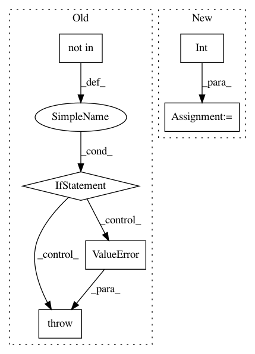

ce2f5daade540e217936cc314bc3c7fc485918e0,nussl/overlap_add.py,OverlapAdd,__init__,#OverlapAdd#Any#Any#Any#Any#Any#Any#Any#,27
Before Change
self.window_type = "triangular" if window_type is None else window_type
self.separation_method = separation_method
if self.separation_method not in ["REPET", "REPET-SIM", "FT2D"]:
raise ValueError("Cannot run this without a separation method! Choose one from [REPET, REPET-SIM, FT2D")
if do_mono:
self.audio_signal.to_mono(overwrite=True)
def separate(self):
After Change
self.overlap_hop_size = overlap_hop_size
self.overlap_window_type = overlap_window_type
self.window_samples = int(np.round(self.audio_signal.sample_rate * self.overlap_window_size))
self.hop_samples = int(np.round(self.audio_signal.sample_rate * self.overlap_hop_size))
self.overlap_samples = self.window_samples - self.hop_samples
// Set the separation method
self._separation_method = None
self._separation_instance = None
In pattern: SUPERPATTERN
Frequency: 3
Non-data size: 6
Instances
Project Name: interactiveaudiolab/nussl
Commit Name: ce2f5daade540e217936cc314bc3c7fc485918e0
Time: 2017-02-23
Author: ethanmanilow@gmail.com
File Name: nussl/overlap_add.py
Class Name: OverlapAdd
Method Name: __init__
Project Name: fizyr/keras-retinanet
Commit Name: 633702f3f411198f777c14e90b8201151e5b886a
Time: 2018-02-22
Author: lacatusu.valeriu@gmail.com
File Name: keras_retinanet/models/resnet.py
Class Name:
Method Name: download_imagenet
Project Name: prody/ProDy
Commit Name: c0c0e9e18e2538d0a9d14260a2e36031e1122d2c
Time: 2012-10-20
Author: lordnapi@gmail.com
File Name: lib/prody/proteins/pdbclusters.py
Class Name:
Method Name: listPDBCluster